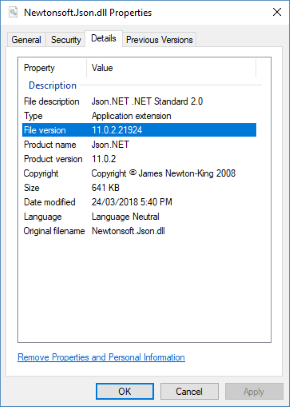

Versioning
It is rare for an OSS project to have one release so you must think about how you will go about releasing new versions.
Breaking Changes
Handling breaking changes between versions is covered in detail here.
Version Numbers
A .NET library has many ways to specify a version. These are the most important:
NuGet Package Version
The NuGet package version is what is displayed on nuget.org, the Visual Studio NuGet UI, and is written to package.config/*.csproj when the packaged is used. This version number is what users will commonly see and refer to when they think and talk about the version of a library they are using. The NuGet package version is used by NuGet and has no effect on runtime behavior.
<PackageVersion>1.0.0-alpha1</PackageVersion>
The NuGet package identifier, e.g. Newtonsoft.Json, combined with the NuGet package version, e.g. 11.0.2, is used to uniquely identify a package in NuGet. A package with a suffix is a pre-release package and has special behavior that makes it ideal for testing. Read about pre-release NuGet packages here.
Because the NuGet package version is the most visible version to developers, it is a good idea to update it using Semantic Versioning (SemVer). SemVer indicates the significance of changes between release (e.g. 1.0 to 2.0 indicates that there are breaking changes) and helps developers make an informed decision when choosing what version to use.
✔️ CONSIDER using SemVer 2.0.0 to version your NuGet package.
✔️ DO use the NuGet package version number in public communication and documentation as it is the version number that users will commonly see.
✔️ DO include a pre-release suffix when releasing a test package.
Users must opt-in to getting pre-release packages so they will understand that the package is not complete.
More information
Assembly Version
The assembly version is what the CLR uses at runtime to select which version of an assembly to load. Selecting an assembly using versioning only applies to assemblies with a strong name.
<AssemblyVersion>1.0.0.0</AssemblyVersion>
By default, the Windows .NET Framework CLR demands an exact match when loading a strong named assembly, e.g. Libary1, Version=1.0.0.0 was compiled with a reference to Newtonsoft.Json, Version=11.0.0.0 and will only load that exact version 11.0.0.0. To load a different version at runtime, a binding redirect must be added to the .NET application's config file.
Strong naming combined with assembly version is a controversial subject. While strong naming a library has a number of benefits, it often results in runtime exceptions that an assembly can't be found and requires binding redirects in app.config/web.config to be fixed. .NET Core assembly loading has been relaxed, and the .NET Core CLR will automatically load assemblies at runtime with a higher version.
✔️ CONSIDER only including a major version in the AssemblyVersion.
e.g. Library 1.0 and Library 1.0.1 both have an AssemblyVersion of
1.0.0.0, while Library 2.0 has AssemblyVersion of2.0.0.0. When the assembly version changes less often, it reduces binding redirects.
❌ DO NOT have a fixed AssemblyVersion.
While a single AssemblyVersion avoids the need for binding redirects, it means that only a single version of the assembly can be GACed. Also, the applications that reference the assembly in the GAC will break if another application updates the GACed assembly with breaking changes.
More information
Assembly File Version
The assembly file version is used to display a file version in Windows and has no effect on runtime behavior. Setting this version is optional. It is visible in the File Properties dialog in Windows Explorer:
<FileVersion>11.0.2.21924</FileVersion>

✔️ CONSIDER including a continuous integration build number as AssemblyFileVersion revision.
e.g. you are building version 1.0.0 of your project, and the continuous integration build number is 99 so your AssemblyFileVersion is 1.0.0.99.
Assembly Informational Version
The assembly informational version is used to record additional version information and has no effect on runtime behavior. Setting this version is optional. If you are using SourceLink, this version will automatically be included on build to contain the NuGet package version plus a source control version, e.g. the git commit hash the assembly was built from. Read more about SourceLink here.
<AssemblyInformationalVersion>The quick brown fox jumped over the lazy dog.</AssemblyInformationalVersion>
Note
An innocuous build warning is raised if this version does not follow the format Major.Minor.Build.Revision. The warning can be safely ignored.
❌ AVOID setting the assembly informational version yourself.
Allow SourceLink to automatically generate the version containing NuGet and source control metadata.